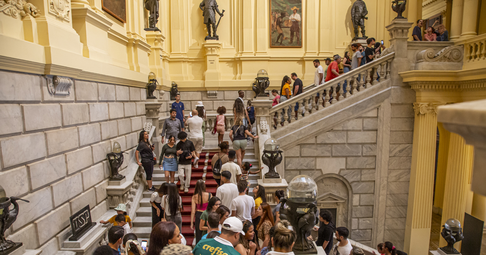
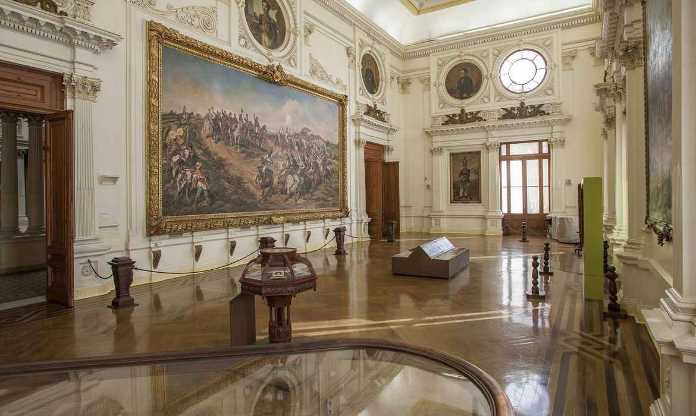
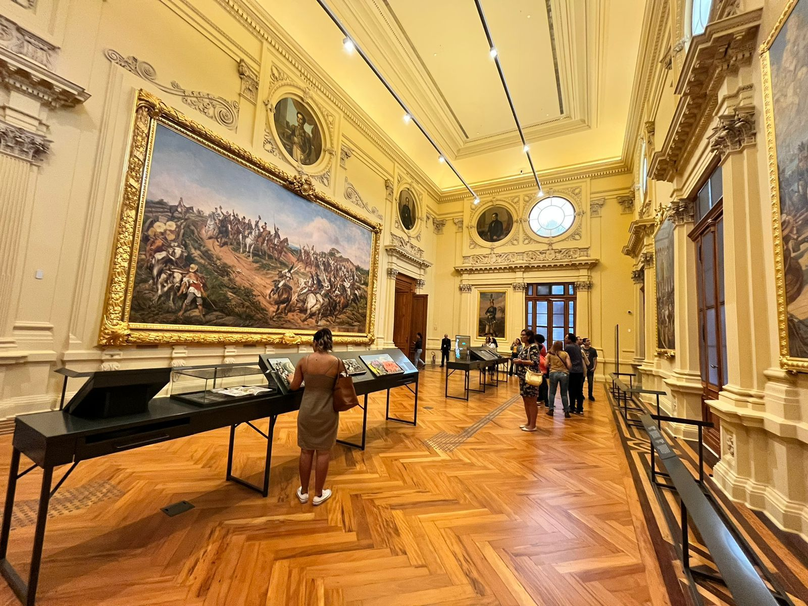

Porque visitar nosso museu?
Em tempos em que quase tudo cabe na tela de um celular, sair de casa para conhecer um
museu pode parecer
um programa dispensável. O Museu Quasar mostra o contrário: a experiência de estar presente, ver de
perto e participar é insubstituível. Mais do que um lugar para observar objetos, ele é um espaço para
aprender, se surpreender e criar memórias.
O primeiro motivo é o atendimento de primeira linha. Uma boa visita começa pelo acolhimento: ser bem
recebido, ter as dúvidas respondidas e sentir que o tempo no museu foi pensado para você. No Quasar, a
equipe está preparada para orientar o público, do visitante que vai pela primeira vez ao que já conhece
o espaço, de modo que ninguém se sinta perdido ou deixado de lado.
Em segundo lugar, as atrações interativas transformam o visitante em protagonista. Em vez de apenas
olhar, o público participa, experimenta e testa o que aprendeu. Atividades como o Quiz de História, por
exemplo, tornam o conhecimento mais leve e divertido, além de ajudarem a fixar o conteúdo. Essa
abordagem agrada a todas as idades: crianças se envolvem pela curiosidade, e adultos redescobrem o
prazer de aprender brincando.
A organização das exposições por seção também faz diferença. Ao dividir o acervo em temas, o museu
permite que o visitante siga um percurso claro, compreenda cada assunto com mais profundidade e escolha
o ritmo da visita. Quem tem pouco tempo pode priorizar uma área de interesse, e quem quer explorar tudo
avança sem confusão, sempre com a sensação de estar construindo uma narrativa.
Como explorar?
O Quasar Museu oferece diversas formas de explorar suas exposições e
atividades. Aqui
estão algumas dicas para aproveitar ao máximo sua visita:
Chegou ao Quasar Museu? Veja o que fazer
Sua visita começa antes mesmo da primeira exposição. Para aproveitar tudo com tranquilidade, siga
estes passos assim que chegar.
1. Chegue com antecedência. Esteja no museu cerca de 10 minutos antes do horário marcado e leve seu
ingresso e um documento de identificação. Com eles em mãos, a entrada é rápida e você não perde nada
da experiência.
2. Aguarde o seu horário. As visitas acontecem em grupos, em horários definidos. Enquanto espera,
aproveite para observar o ambiente e se preparar para o que vem pela frente.
3. Acompanhe o líder do museu. Ele conduzirá a experiência, apresentando as exposições por seção,
contando curiosidades e mostrando as atrações interativas. Fique à vontade para fazer perguntas ao
longo do caminho.
4. Aproveite cada momento. Ao final da visita guiada, a visitação livre é liberada, e você pode
voltar às exposições que mais chamaram sua atenção, explorar com calma e também aproveitar a
alimentação.
Esperamos você para uma experiência de aprendizado e descoberta!